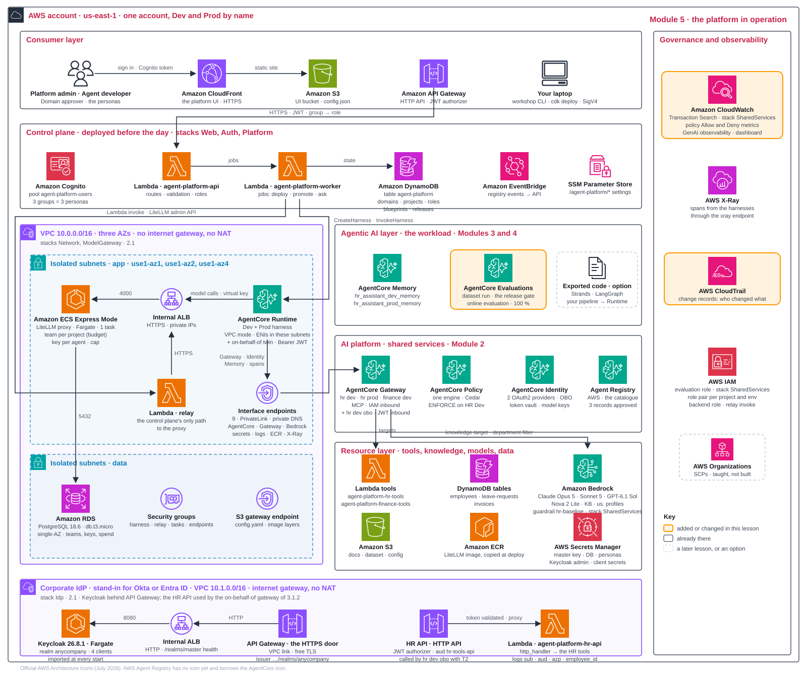

One release, one window
Module 4 ended with one approved HR release live in Prod. This module operates it over one observation window, so that the trace, the cost worksheet and the scorecard all describe the same service; the incident exercise is a separate practice scenario. Signals come first, because cost, audit and quality all read them; quality closes the module and turns every workshop shortcut into a production backlog. Copy this operations header into your journey record and fill it as you go.
Workload / owner / environment: hr-assistant / People Operations / prod
Approved release / Prod harness version / blueprint version:
Observation start and end (UTC):
Traffic in the window: seeded by Module 4 promotion (count) + apply 7 (count) + your own questions
Telemetry: Transaction Search, GenAI observability, Overview; sampling and missing signals:
Successful outcome definition: an answered conversation (no error, no BUDGET_EXCEEDED)
Cost owner / incident responder / next review date:The telemetry backend configured here is CloudWatch Transaction Search with GenAI observability and the platform's Overview. CloudWatch Omni and third-party backends are alternatives from D1.7, not dashboards that exist in this account. The implementation configures no alarms and no automatic rollback.
Signals: seeing the platform run 5 min
Start with the signals, because the cost, audit and quality steps all read them. Send Prod traffic to the promoted version, then read its metrics, policy decisions and one trace from four evidence sources.
The dashboard combines four evidence sources:
- AgentCore metrics: invocations, errors and latency.
- Policy decisions: allowed and denied tool calls.
- Online evaluation: quality scores.
- Model-gateway spend logs: spend per key, read through the gateway's API rather than from CloudWatch.
The placement and reader decisions behind these sources were made in D1.7 and D1.8. Here you check them against a real window. Correlate three things for the same minutes: AgentCore Runtime invocations, errors and latency for the Prod endpoint; the gateway's AllowDecisions and DenyDecisions (HR Dev enforces, HR Prod observes in LOG_ONLY unless you switched it); and the trace of one conversation, whose spans show the model calls and the tool calls through the gateway.
Watch it run 10 min
- command
workshop apply 7. It needs the Prod agent that promotion created in Module 4: without an approved and promoted release it stops with no Prod agent yet. It first prints the online evaluation that promotion registered (status, sampling, quiet timeout, evaluator ids), then sends ten Prod conversations by default (prod_trafficin your record, a whole number from 1 to 50), three at a time with one line per conversation, and reportsOK 10 of 10 conversations answered. It then waits, up to three minutes, for those invocations to show in the Prod metrics and prints invocations, errors, sessions and latency, the policy allow and deny counts, and the team's spend by environment. It posts one thumbs-up for the first answered conversation (POST /feedback), reads the long-term memory records of employee E1001, the sample conversationworkshop apply 6wrote into the Dev memory (the quality step interprets them), and ends with the online scores so far (or none yet:workshop scoresshows them when they arrive) and two links, Overview and CloudWatch GenAI observability. The step usually takes about a minute (ten conversations were answered in 31 s on warm sessions); a cold session takes 25 to 40 s and the metrics check can wait up to three minutes, so allow up to five. - screenOverview, with Prod selected: read invocation counts, error rate and latency, spend by environment, policy Allow/Deny counts, the online scores so far and the feedback counts; the thumbs-up apply 7 posted is already there.
- screenCloudWatch · GenAI observability: follow one Prod trace step by step.
- recordFill the operations header at the top of this page: the Prod harness version (Release detail), the window's start and end, the answered counts (seeded at promotion in Module 4, sent by apply 7, your own), and which evidence was present or missing. A trace id correlates records; it does not identify the user.
If a metric is missing, distinguish idle traffic, a pipeline delay (the metrics check waits up to three minutes; policy metrics can lag four) and a broken collection path before concluding anything. A missing signal is a finding, not a pass.
Your design record: module_7 input
module_7.inputs.prod_traffic (default 10, a whole number from 1 to 50) is the number of Prod conversations workshop apply 7 sends. The module_7 block with its decisions and backlog is shown with the production backlog below. With the window's traffic answered and its signals read, the next question is what that traffic cost.
Cost: measured spend and successful outcomes 5 min
Calculate what a successful HR answer costs, including failed calls and every conversation in the window, decide how shared costs are allocated, and plan the billing reconciliation.
Price the outcome, not the call. Model spend per key comes from the model gateway's spend logs, which see every call; sampled traces do not. The successful outcome for HR is an answered conversation; a failed or retried call stays in the spend and adds nothing to the outcomes.
| Rule | Benefit | Trade-off |
|---|---|---|
| Define the window and scope | One UTC window, one environment, one key | Spend outside the window, or on another key, distorts the ratio |
| Count every successful outcome in the window | A comparable denominator | The Prod key also paid for traffic other commands sent |
| Keep failures in the numerator | An honest unit cost | A cheaper model with more failures can look worse, as it should |
| Zero successful outcomes | Report total cost and zero completions | Unit cost is undefined, not zero |
Decide how shared cost is allocated 5 min
D5.1How is shared cost allocated?
| Option | Pros | Cons | Choose when |
|---|---|---|---|
| Measured consumption: every call priced and charged to the key that made it | allocation follows use | needs complete, non-overlapping metering and a pricing basis; the foundation stays unallocated | metering exists, as here through the model gateway |
| Usage-based share: shared cost split by a proxy such as request count | repeatable when direct attribution is missing | a request count under-charges large or slow requests | shared services without per-call metering |
| Platform-funded pool: the foundation paid centrally; teams see only their direct spend | simple for teams | unit costs hide the shared spend; nobody feels the platform's bill | a first platform, few workloads |
This workshop. Costs have two categories:
- Model calls: measured per key, identifying agent, environment and model.
- Shared services: network, gateways, registry and proxy are platform-funded; the Keycloak stand-in from the foundation is unallocated too, though in production the company's identity provider is its own cost centre, not the platform's.
The rough fixed-cost estimate is 0.28 USD/hour: proxy/database ~0.10 plus nine interface endpoints ~0.18. The corporate IdP from Module 2 adds about 0.08 USD/hour (one Fargate task and an internal load balancer; its two HTTP APIs cost almost nothing at this traffic), about 0.36 USD/hour in total while everything is deployed. This is not the full platform bill. Endpoints are billed per AZ-hour, including idle time. For HR, use key spend ÷ answered conversations; failed and retried calls remain in spend.
Production path. Make cost accounting explicit:
- Allocation: document the shared-cost rule and revisit it as traffic and tenants change.
- Evidence: activate billing tags; trace attributes are not billing tags. Reconcile gateway estimates with Cost Explorer or CUR.
- Control: AWS Budgets sends delayed alerts; gateway caps block calls. Read unit cost alongside quality.
Unit cost for the Prod window 10 min
- screenCalculate Prod key spend ÷ Prod conversations answered. The apply output counts only the conversations it just sent (ten by default). The Prod key has also paid for the traffic seeded at promotion (the answered count
workshop traffic --prod 3printed, normally three) and for any Prod question you asked after promotion in Playground · Prod or withworkshop ask --env prod, so add those to the denominator. Failed calls add spend, not successful outcomes. - recordWrite the calculation with its parts: Prod key spend (Keys tab or Overview, with its time), answered conversations (apply 7's count + the seeded count + your Prod questions), failed conversations, and the result. Label it estimated from model-gateway spend; shared costs are not in it.
- recordWrite the allocation rule for shared costs (network, endpoints, proxy, registry, gateways and the corporate IdP), who owns the fixed cost, and how often it is reviewed. Write
my_callformodule_7.decisions.cost_allocation. - recordPlan the reconciliation: with authorised billing access, compare the gateway's estimate with Cost Explorer or the Cost and Usage Report for the same scope and period, recording data-through time, cost basis and excluded categories. Current-period billing data is delayed and revised. Assign an owner and a date if you have no billing access today.
Worked calculation and budgets
These are invented practice inputs, not AWS prices or measurements. A report-generating workload processed 100 jobs in 24 hours, 96 successfully, with complete metering of retries and failures: model input 240,000 tokens at 2 USD per million (0.48), output 60,000 at 8 USD per million (0.48), runtime 1.44, record queries and storage 0.40, and a 10% share of a 4.00 USD telemetry pool (0.40), 3.20 USD in total. Unit cost is 3.20 ÷ 96 ≈ 0.0333 USD per successful outcome; dividing by 100 would hide the four failures.
- With only 80 successes at the same cost: 0.04 USD.
- Cutting input tokens by 25% with nothing else changed: input becomes 0.36, the total 3.08, about 0.0321 USD per outcome, a 3.75% saving to weigh against effort and correctness risk.
Assign a cost owner and a threshold. AWS Budgets by tag sends delayed alerts; it is not a synchronous cap. The gateway's key and team caps (Module 4) block calls. A notification needs an authorised destination and a test. Write one improvement decision with its expected saving, performance effect, correctness risk, owner and the evidence the quality step needs. Cost explains what was spent; it does not explain who changed what, which is the audit question next. Activate billing tags through the billing owner; trace attributes are not billing tags.
Audit and incidents: what each record can answer 5 min
Signals and cost show what happened, not who caused it. Explain what changed and who could act: connect traces, policy decisions, release records and CloudTrail, check who may read telemetry, then decide a response and its owner.
| Source | Question it answers | Coverage to verify |
|---|---|---|
| Platform release records (Releases, Release detail) | Who created, submitted, approved and promoted which release, with which scores | Which actions emit records; the persona recorded; the link to the harness version |
| CloudTrail | Which AWS API changed a resource, under which AWS identity | Account and Region; Event history keeps 90 days of management events; data events need configuration |
| Traces, metrics and spend | Which call failed or was denied, how long it took, what it cost | Sampling, content kept, the reader's permissions |
The identities differ. A gateway mode change made on the Governance screen (or with workshop mode) is executed by the platform API, so CloudTrail records UpdateGateway under the API's execution role, not under the admin persona; the persona is visible only where the platform records it. CloudTrail does not record prompts, tool arguments or answers. A trace id correlates records; the authenticated application must establish who a request represents.
Choose retention and readers for each source. Shorter retention reduces storage and exposure but can remove evidence needed for an investigation; immutable retention needs a configured mode, duration and administrative permissions. CloudTrail log-file integrity validation detects changes to delivered files; enabling digests alone neither validates nor prevents deletion.
Reconstruct a change and check who may read the evidence 10 min
- screenOpen the release you promoted (Release detail): note who created, submitted, approved and promoted it and when, and the scores attached to it.
- screenIn the CloudTrail console, Event history, filter by event name
UpdateGatewayand find the ENFORCE switch you made in Module 3: record the time, the calling identity (the platform API's role) and the gateway id. Compare with what the platform shows for the same change, and record the gap if the persona appears nowhere. - screenIn CloudWatch GenAI observability, open one Prod trace and note which fields hold content (prompts, answers, tool arguments) and which hold metadata. Per D1.8, the workshop keeps full synthetic content and CloudWatch IAM decides who may read it, independently of platform personas. Record which roles in your organisation would read traces, and whether redaction before export (
AWS_REDACT_SPAN_ATTRIBUTES) or metadata-only capture would be required. No reader-restricted role is supplied, so a denied-reader test is a planned check. - recordWork through the practice incident below and write your own record. It is a separate exercise: keep its observations out of the Prod-window evidence you collected above.
Detect, decide, recover
Detection needs a verified query, a threshold, an evaluation interval, pending and recovery durations, a no-data rule, an access profile, a responder and a notification destination. None is configured in this workshop; write them as implementation work. Decide whether missing data means idle traffic or a failed collection path by checking an expected schedule or a heartbeat.
| Response | Select when | Trade-off |
|---|---|---|
| Pause affected work or revoke access through its owner | Continuing could expose data or amplify a failure | Limits harm, reduces availability |
| Restore the known compatible release or configuration | Evidence links the failure to a reversible change | Faster recovery; compatibility must be preserved (rollback is UpdateHarnessEndpoint back to the previous version, Module 4) |
| Continue bounded diagnosis | Impact is contained and telemetry can distinguish causes | Keeps service; extends the incident if the hypothesis is wrong |
Practice scenario, separate from the Prod window. This incident concerns HR Dev, not the Prod release you are observing; record it as a paper scenario and do not mix its timeline into the Prod-window worksheet. After the ENFORCE switch on HR Dev, an employee reports that the assistant "refused to book" a two-week holiday. Timeline: the trace shows hrtools___submit_leave_request with days: 14 answered by JSON-RPC -32002; the Overview shows a Deny count for HR Dev; CloudTrail shows the UpdateGateway call minutes earlier; the release record shows no new agent version. Hypothesis: the policy change, working as designed (requests over ten days are forbidden). Counterevidence and limits: the agent version did not change; whether a two-week request should be allowed is a business decision. Decision: no rollback; the Domain approver and Platform admin decide whether to change max_leave_days; the workload owner makes the agent explain the rule to the employee. Closure evidence: the decision recorded, and if the rule changes, max_leave_days updated in the record and the policy redeployed with workshop apply 4. That rerun also reapplies module_4.inputs.gateway_mode to all three gateways, so with the record still at LOG_ONLY it resets HR Dev's enforcement: re-establish ENFORCE on HR Dev (Governance toggle or workshop mode ENFORCE --gateway hr-dev), confirm the mode on Governance, then verify an allowed call (workshop call --as hr-dev get_leave_balance E1001) and the over-limit refusal of Module 3 (a request above the new limit → JSON-RPC -32002).
Incident: owner: severity:
Timeline (UTC): trace / metric / release / CloudTrail references
Hypothesis: counterevidence and unknowns:
Decision: response, owner, approval
Recovery checks: the original case replayed with the existing checks; scope and audit intact
Actual status: open / recovered / not executed (paper scenario)Changed releases return through Module 4's evaluation and approval and promotion. Leave an incident open if recovery or control checks are missing.
Quality and improvement: decide how quality is watched in Prod 5 min
The practice incident showed that a control working as designed can still leave an employee with a poor answer, so the last signal to read is quality. Read the online quality scores with their counts and timing, the feedback and the memory the agent formed, then turn every workshop shortcut into a production action with an owner.
D5.2How is quality watched in Prod?
| Option | Pros | Cons | Choose when |
|---|---|---|---|
| Online evaluation: a sampling rate, evaluators, a quiet timeout | continuous | judge cost; results minutes later | always |
| Periodic batch over real traces | cheaper | lag | low traffic |
| User feedback only | free | sparse and biased | never alone |
This workshop. Promotion registers three online settings:
- Sampling: 100% of Prod conversations.
- Judges: Helpfulness, Harmfulness and ToolSelectionAccuracy. AgentCore names its built-in judges with a
Builtin.prefix, soworkshop apply 7echoes the registered configuration asBuiltin.ToolSelectionAccuracyand CloudWatch uses that as the metric name;workshop scoresand the Overview drop the prefix. - Quiet timeout: one minute; scores arrive about 8–11 minutes after traffic.
Feedback is tied to sessions. Rollback means pointing live back at the previous harness version. Today that is one call to the AgentCore API (UpdateHarnessEndpoint), made outside the platform: the platform API only promotes approved releases, and the UI has no rollback button yet.
Production path. Roll back on quality regression and turn user feedback into new dataset tests.
Quality, feedback and memory 10 min
- command
workshop scores: read the online scores. The three conversations seeded at promotion withworkshop traffic --prod 3should already be scored; today's ten arrive 8 to 11 minutes after each session goes quiet. The command lists the mean and the sample count per evaluator over the last three hours, then the platform's own view of the same numbers; the Overview shows them too.workshop traffic --prod 3sends more conversations whenever you want fresh scores. - screenOn the Overview, read the feedback counts: the thumbs-up
workshop apply 7posted for its first answered conversation (POST /feedback) is there. Feedback is tied to a session; one rating is not a quality signal. - recordRead the memory section of the
workshop apply 7output: the long-term preference records extracted for E1001 (a preference for two-week leave blocks in August) come from the two sample eventsworkshop apply 6wrote into the Dev memory. They prove the memory strategy works; they are not observations of Prod users, whose conversations go to the separate Prod memory. - recordRecord per evaluator the mean and the sample count, the window (last three hours), and when the scores arrived relative to the traffic (8 to 11 minutes after a session goes quiet). Note that the online judges (Helpfulness, Harmfulness, ToolSelectionAccuracy) differ from the release gate's four. Write
my_callformodule_7.decisions.prod_quality.
If a regression appears, keep sanitised failing sessions as a new, versioned dataset case and return to Module 4's evaluation loop; changing evaluator criteria needs a new version so the score history stays interpretable. A short workshop run does not prove sustained concurrency or a production service level.
The production backlog
D5.3Recap: what changes for production
Turn the recap into your production backlog: one action and owner per row. Use your design record's my_call decisions to choose those actions. The owner column is a suggestion; replace it with your teams.
| Workshop choice | Production action | Suggested owner | Decided in |
|---|---|---|---|
| One account; scoped names | Platform/workload accounts; SCPs | Cloud platform team | Module 1 · accounts |
| Private endpoints; single-AZ database | Multi-AZ, scoped endpoint policies, UI/API WAF | Network and platform team | Module 1 · landing zone and telemetry |
| Shared team builds platform; project team builds agent | Name build, release, on-call and escalation owners | Platform lead with domain leads | Module 1 · operating model |
| Local Cognito users for the platform; self-hosted Keycloak for employees | Brokered corporate IdP for the platform; Okta or Entra ID as the employees' issuer; MFA | Identity team | Module 2 · identity |
| Agent service identity for Dev and Prod; on-behalf-of demonstrated in Module 3 (exchange and gateway) and Module 4 with Keycloak | On-behalf-of wherever user identity matters; Okta or Entra ID as issuer; row-level security in the tools | Identity team with tool owners | Module 3 · HR identity |
| Account-root trust; empty tool list allows all | Tighten templates | Platform team with security | Module 2 · control plane |
| One approver group | Domain-bound approvers; two for Prod | Domain leads | Module 1 · operating model |
| One IAM registry; all personas read | Organization IAM registry + RAM; separate JWT registry or mediated IDE view | Platform team (catalogue owner) | Module 2 · registry |
| Gateway per project and environment | Add shared and domain gateways | Platform team | Module 2 · gateways |
| Tools behind gateways | Specialist agents as targets; identity per hop | Platform team with workload teams | Module 3 · HR gateway |
| Lambda tools; pinned KB filter; the HR API as an OpenAPI target with token exchange, tool logic unchanged | OAuth targets for every tool that needs the person; row-level security in the tools; user-scoped retrieval | Tool owners | Module 3 · HR gateway |
| Shared engine; handwritten policies | Domain engines; reviewed policy changes | Policy owners per domain | Module 2 · gateways |
| No VPC Lattice target endpoints | Private VPC targets; account-quota review. Agent-to-gateway PrivateLink already exists | Network team | Module 3 · HR gateway |
| One model gateway; master key | Per-environment gateways; scoped admin key; early cap alerts | Platform team | Module 2 · model route |
| Catalogue approval label | Approved-reference deployment gate | Platform team | Module 4 · discovery |
us. profiles; no workshop SCP | Data-class processing rules; SCP profile exceptions | Security and data owners | Module 2 · model route |
| Harness configuration | Containers where needed; MCP servers on Runtime | Workload teams | Module 3 · HR blueprint |
| Self-reported scores from the command, platform-run evaluation from the Releases screen; team thresholds | Platform-run evaluation only; minimum floors; evidence-bound approval | Platform team with domain approvers | Module 4 · evaluation |
| UI-triggered worker | Git pipeline calling platform API | Platform team | Module 4 · promotion |
| No alarms; rollback by the AgentCore API | Alarms and automatic rollback | Workload owner with platform operations | Audit and incidents |
| Full traces; CloudWatch IAM readers | Metadata by default; approved redaction; readers/retention per source | Data owners with platform operations | Module 1 · landing zone and telemetry |
| Per-key spend; shared costs unallocated | Successful-outcome unit cost; shared-cost rule | FinOps owner | Cost |
| Destroyable resources; no backups | RETAIN and point-in-time recovery | Each resource owner | all |
This workshop. Defaults keep the day manageable. Repository tests check that resources are destroyable for cleanup. Production needs deliberate retention and recovery choices.
Your design record: module_7
module_7:
inputs: # read by: workshop apply 7
prod_traffic: 10 # conversations sent to Prod
decisions:
observability: {workshop: transaction-search, my_call: "..."}
prod_quality: {workshop: online-eval-100pct, my_call: "..."}
telemetry_content: {workshop: full-content, my_call: "..."} # synthetic data; CloudWatch IAM controls trace access
cost_allocation: {workshop: measured-consumption, my_call: "..."} # per key; the foundation unallocated
backlog: # your production path: one line per recap row, with an owner
- "accounts: platform + workload, owner: cloud team"
- "identity: brokered Entra ID, owner: IAM team"
- "..."- recordFill
design-record.yaml's backlog: one production action and owner per recap row. - recordFor each row, use your
my_calldecisions to choose the action, then name the accountable owner and a review date. Add one line from the Finance gap table of Module 3 if you would deploy a Finance agent.
Read more: production readiness; CloudWatch Omni; CloudTrail; billing tags.
Module 5 glossary
Terms used on this page, in the order they first appear. Open the list when a term is unfamiliar.
Reference · Module 5 glossary
- Trace, span
- A trace records one request (one turn); spans record its individual steps.
- Session
- One conversation under one session id, kept until you start a new session in the Playground or pass a new one to
workshop ask --session; each turn of it is a trace. - Transaction Search
- CloudWatch search over spans, including agent conversations.
- Audit trail
- Release records identify platform changes; CloudTrail records AWS API activity. Event history keeps 90 days of management events; data events require configuration. These are not prompt records.
- Redaction
- Remove sensitive fields before telemetry is stored or exported.
- Retention
- How long telemetry is kept.
- Rollback
- Point
liveback to the previous version. - Online evaluation
- Quality scoring over real agent traffic.
- Sampling
- The fraction of conversations recorded or evaluated.
- Quiet timeout
- Idle interval used to decide that a conversation has ended.
- Feedback
- A rating and comment tied to a session.
- Unit cost
- Spend divided by successful business outcomes. Failed attempts remain in the spend.
- Cost allocation
- Assign direct and shared costs to the teams that use the platform.
- Hardening
- Replace workshop shortcuts with production settings.
The operating platform at the end of Module 5
No new workload is built. Four sources now show its behaviour, policy decisions, quality and spend. Release records and CloudTrail support change investigations.

hr dev obo gateway with its OpenAPI target and the Dev on-behalf-of twin. The corporate IdP they rely on, Keycloak on Fargate behind an internal load balancer and an API Gateway HTTP API, with the HR API and its JWT authorizer in front of the Lambda agent-platform-hr-api, lives in its own small public VPC (10.1.0.0/16) and is not drawn here. Click to open full size.This is the complete platform that Module 1 planned. The handoff collects your design record, evidence and backlog; clean-up removes the workshop resources.